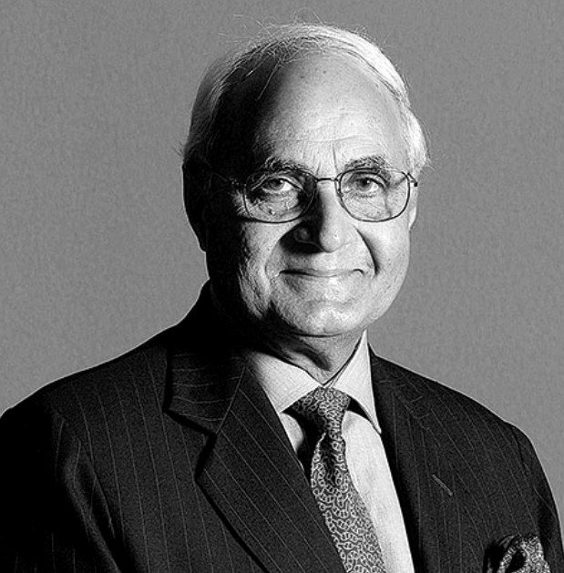
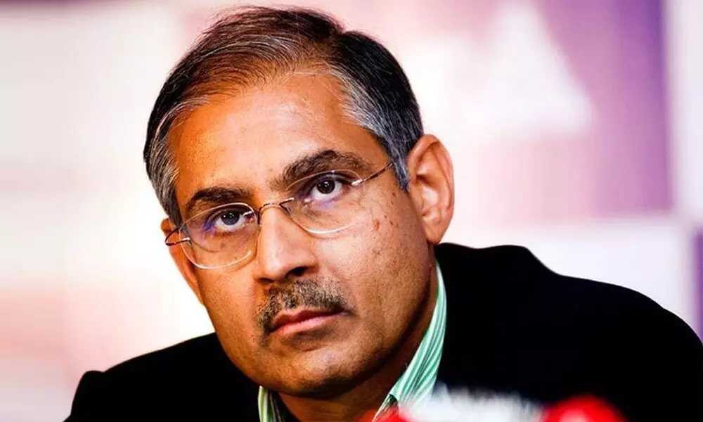

Meet Our Founder

Chaudhary Raghvendra Singh founded DLF in 1946, in pre-independent India. A born businessman, he began his real estate career by transforming the urban landscape of Delhi's National Capital Region, providing millions of homes to families displaced by partition who settled in the capital.
Born on September 19. 1910 and originally a graduate of St. Stephen's College, Delhi, Chaudhary Saheb went on to join the Indian Army where he rose to the rank of Major and was decorated with an MBE for exemplary service.
A philanthropist at heart, Chaudhary Saheb is remembered not only for his innovations and entrepreneurial skills but also for his association, as Board Member, with various charitable trusts and educational institutions, his role in pioneering welfare reforms for ex-servicemen.
Meet Our Chairman Emeritus

Honoured with the decoration of Officer of the Order of St. Charles by HSH Prince Albert II of Monaco on October 04, 2010, in recognition of his valuable contribution as Honorary Consul General of Monaco in Delhi for 20 years.
Padma Bhushan conferred by the Government of India on January 26, 2010.
Ranked as the richest real estate baron and the eighth richest person in the world at a net worth of US$30 billion by Forbes in its March 2008 issue.
Received "The Samman Patra Award" for being one of the top tax payers of Delhi in 2000 by the Government of India.
Recipient of the Delhi Ratna Award by the Government of Delhi for his valuable contribution towards the city's development.
Meet Our Chairman

With more than 35 years of real estate expertise, Mr. Rajiv Singh plays a major role in DLF as the Chairman of the company. His leadership has helped DLF build a resilient business able to withstand market fluctuations. Thanks to his in-depth knowledge of the realty sector, he has driven DLF's annuity business from INR 15.5 million in 2007 to INR 29,000 million in 2019. Under his guidance, the company delivered over 10.4 mn sq m after going public in 2007.
A graduate of Massachusetts Institute of Technology (MIT), U.S.A. Mr. Singh holds a degree in mechanical engineering. He has set new benchmarks in housing, infrastructure, and urban development in India and is widely recognised for his contribution to the economic development of Haryana.
His creation of world-class infrastructure has attracted significant foreign and domestic investment into the country as well as supported in generating employment opportunities in Haryana which has had a positive impact on Indian lifestyles and aspirations.
In December 2005, Mr. Singh was awarded The Udyog Ratna Award for Valuable Contributions to Economic Development of Haryana.